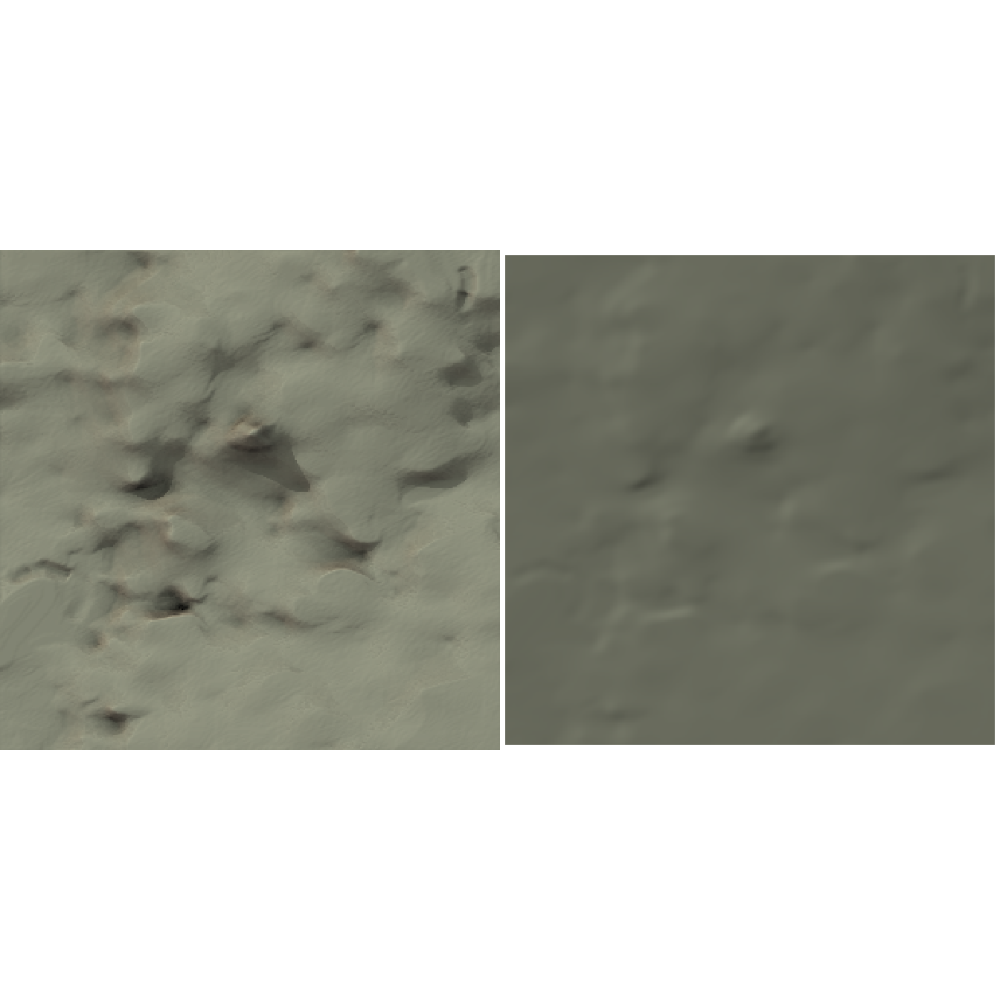

Example of anisotropic landscapes
Hervé Guillon
30 January 2021
zeta_examples.RmdPurpose
This vignette displays the calculation of anisotropy exponent for different landscapes: Gabilan Mesa, Yosemite Valley and Modoc Plateau.
Gabilan Mesa
Gabilan Mesa landscape is the same landscape that we used in other vignettes and the test bed of Perron, Kirchner, and Dietrich (2008) methods. Using get_zeta() returns a data.frame with the variable of interest for the analysis of topographic roughness and anisotropy.
gabilan_mesa <- raster::raster(file.path(system.file("extdata/rasters/", package = "statisticalRoughness"), "gabilan_mesa.tif"))
res_gabi <- get_zeta(gabilan_mesa)Gabilan Mesa landscape has a minimum elevation of 216 m, an average elevation of 310 m, and a maximum elevation of 381 m. The maximum relief is thus 166 m.
The figure below showcases the landscape in its original form. The landscape was rotated so that in this original frame of reference, \(\theta_x =\) 122\(^\circ\) and \(\theta_y =\) 212\(^\circ\). (In the rotated frame of reference, \(\theta_x' = 0^\circ\) and \(\theta_y' = 90^\circ\).) The segmented regression on the power spectrum identifies scalings with slope \(\beta_1 =\) -2.13, and \(\beta_2 =\) -5.43, before and after a cut-off lengthscale of \(1/f_c =\) 280 m, respectively. As \(\beta = 2H + d\), and \(d = 2\), the Hurst coefficients \(H\) corresponding to \(\beta_1\) and \(\beta_2\) are 0.0661, and 1.72, respectively. Before a cut-off lengthscale of 119 m, the roughness exponents in the \(x\)– and \(y\)–directions are \(\alpha_{1,x} =\) 0.858, and \(\alpha_{1,y} =\) 0.804. Consequently, the anisotropy exponent is \(\zeta_1 =\) 1.07. After cut-off lengthscale, the roughness exponents are lower and almost equal with \(\alpha_{2,x} =\) 0.347, and \(\alpha_{2,y} =\) 0.329. Consequently, the anisotropy exponent is \(\zeta_2 =\) 1.05. The maximum cutoff lengthscale recorded for roughness exponents is \(r_{max} =\) 387 m.
The figure below showcases the landscape in its original form (left) and smoothed with a Gaussian kernel of 11 standard deviations to match the value of \(r_c\) (right).

Yosemite Valley
yosemite <- raster::raster(file.path(system.file("extdata/rasters/", package = "statisticalRoughness"), "yosemite.tif"))
res_yose <- get_zeta(yosemite) Yosemite Valley landscape has a minimum elevation of 1220 m, an average elevation of 1710 m, and a maximum elevation of 2700 m. The maximum relief is thus 1480 m. The figure below showcases the landscape in its original form. The landscape was rotated so that in this original frame of reference, \(\theta_x =\) 122\(^\circ\) and \(\theta_y =\) 212\(^\circ\). (In the rotated frame of reference, \(\theta_x' = 0^\circ\) and \(\theta_y' = 90^\circ\).) The segmented regression on the power spectrum identifies scalings with slope \(\beta_1 =\) -4.94, and \(\beta_2 =\) -4.23, before and after a cut-off lengthscale of \(1/f_c =\) 437 m, respectively. As \(\beta = 2H + d\), and \(d = 2\), the Hurst coefficients \(H\) corresponding to \(\beta_1\) and \(\beta_2\) are 1.47, and 1.11. Before a cut-off lengthscale of 542 m, the roughness exponents in the \(x\)– and \(y\)–directions are \(\alpha_{1,x} =\) 0.877, and \(\alpha_{1,y} =\) 0.76. Consequently, the anisotropy exponent is \(\zeta_1 =\) 1.15. After cut-off lengthscale, the roughness exponents are lower and almost equal with \(\alpha_{2,x} =\) 0.522, and \(\alpha_{2,y} =\) 0.52. Consequently, the anisotropy exponent is \(\zeta_2 =\) 1. The maximum cutoff lengthscale recorded for roughness exponents is \(r_{max} =\) 1220 m.
The figure below showcases the landscape in its original form (left) and smoothed with a Gaussian kernel of 54 standard deviations to match the value of \(r_c\) (right).

Modoc Plateau
modoc <- raster::raster(file.path(system.file("extdata/rasters/", package = "statisticalRoughness"), "modoc.tif"))
res_modo <- get_zeta(modoc) Modoc Plateau landscape has a minimum elevation of 1420 m, an average elevation of 1450 m, and a maximum elevation of 1480 m. The maximum relief is thus 55.2 m. The landscape was rotated so that in this original frame of reference, \(\theta_x =\) 91.6\(^\circ\) and \(\theta_y =\) 182\(^\circ\). (In the rotated frame of reference, \(\theta_x' = 0^\circ\) and \(\theta_y' = 90^\circ\).) The segmented regression on the power spectrum identifies scalings with slope \(\beta_1 =\) -2.39, and \(\beta_2 =\) -5.22, before and after a cut-off lengthscale of \(1/f_c =\) 703 m, respectively. As \(\beta = 2H + d\), and \(d = 2\), the Hurst coefficients \(H\) corresponding to \(\beta_1\) and \(\beta_2\) are 0.194, and 1.61. Before a cut-off lengthscale of 890 m, the roughness exponents in the \(x\)– and \(y\)–directions are almost equal as \(\alpha_{1,x} =\) 0.893, and \(\alpha_{1,y} =\) 0.891. Consequently, the anisotropy exponent is \(\zeta_1 =\) 1. After cut-off lengthscale, the roughness exponents are more distinct as \(\alpha_{2,x} =\) 0.653, and \(\alpha_{2,y} =\) 0.802. However, the anisotropy exponent, \(\zeta_2\), cannot be derived as at least one ofthe distribution of \(\alpha_2\) has a large spread and its mean is an inconclusive description of centrality
(\(\alpha_{2,x} =\) 0.653 \(\pm\) 0.358, and \(\alpha_{2,y} =\) 0.802 \(\pm\) 0.42). The maximum cutoff lengthscale recorded for roughness exponents is \(r_{max} =\) 1820 m.
The figure below showcases the landscape in its original form (left) and smoothed with a Gaussian kernel of 89 standard deviations to match the value of \(r_c\) (right).

Comparing Landscapes
The following table summarizes the metrics for the three landscapes.
| landscape | \(\beta_1\) | \(\beta_2\) | \(1/f_c\) | \(\alpha_{1,x}\) | \(\alpha_{1,y}\) | \(\zeta_{1}\) | \(\alpha_{2,x}\) | \(\alpha_{2,y}\) | \(\zeta_2\) | \(r_c\) | \(r_{max}\) | \(\theta_x\) | \(\theta_y\) |
|---|---|---|---|---|---|---|---|---|---|---|---|---|---|
| Gabilan Mesa | -2.13 | -5.43 | 280 | 0.858 | 0.804 | 1.07 | 0.347 | 0.329 | 1.05 | 119 | 387 | 122 | 212 |
| Yosemite Valley | -4.94 | -4.23 | 437 | 0.877 | 0.76 | 1.15 | 0.522 | 0.52 | 1 | 542 | 1220 | 122 | 212 |
| Modoc Plateau | -2.39 | -5.22 | 703 | 0.893 | 0.891 | 1 | 0.653 | 0.802 | - | 890 | 1820 | 91.6 | 182 |
While the estimate of statistical roughness from \(\beta\) and \(\alpha\) values differ for the three landscapes, their interpretations are coherent.
Gabilan Mesa landscape is weakly anisotropic and mainly correlated below 119 m, and isotropic and mainly anti-correlated above 119 m. Yosemite Valley landscape is anisotropic and mainly correlated below 542 m, and isotropic with no clear correlation above 542 m. Modoc Plateau landscape is isotropic and mainly correlated below 890 m, and with undetermined behaviour above 890 m.
References
Perron, J. Taylor, James W. Kirchner, and William E. Dietrich. 2008. “Spectral Signatures of Characteristic Spatial Scales and Nonfractal Structure in Landscapes.” Journal of Geophysical Research: Earth Surface 113 (F4): n/a–n/a. https://doi.org/10.1029/2007JF000866.